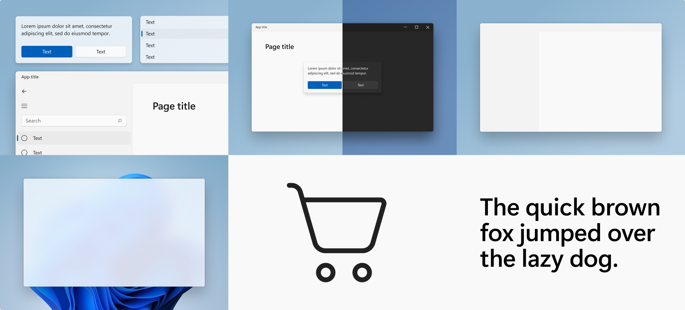
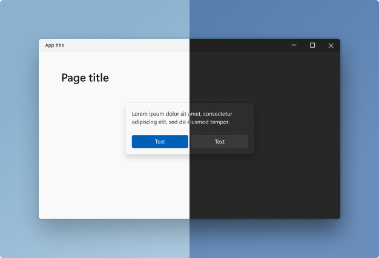
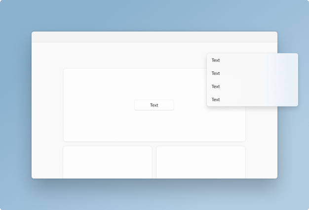
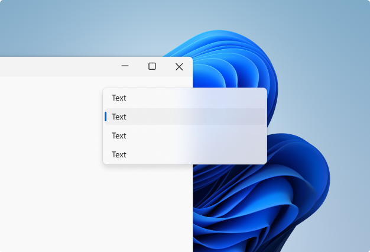
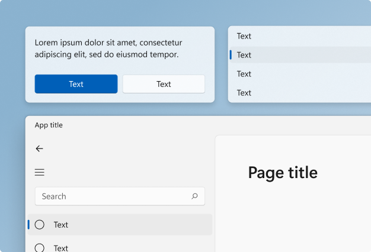

Design for Windows apps
Here, you'll find design guidelines and examples for creating Windows app experiences. Windows 11 incorporates Fluent's design language and principles for a cohesive look and feel that's uniquely Microsoft.
To get the building blocks for crafting Windows experiences, use WinUI. These components incorporate Fluent's design language, so you can be confident you're building great experiences within the Fluent ecosystem.
Windows 11 design principles

Windows 11 marks a visual evolution of the operating system. We have evolved our design language alongside of Fluent to create a design that is human, universal, and truly feels like Windows.
The design principles below have guided us throughout the journey of making Windows the best-in-class implementation of Fluent.
Effortless
Windows 11 is faster and more intuitive. It's easy to do what I want, with focus and precision.
Calm
Windows 11 is softer and decluttered; it fades into the background to help me stay calm and focused. The experience feels warm, ethereal, and approachable.
Personal
Windows 11 adapts seamlessly to the way I use my device. It bends and flexes to my individual needs and preferences so that I can truly express myself.
Familiar
Windows 11 balances a new, refreshed look and feel with the familiarity of the Windows I already know. There is no learning curve; I can pick it up and go.
Complete + Coherent
Windows 11 offers a visually seamless experience across platforms. I can work in many platforms and still have a consistent Windows experience.
Windows 11 signature experiences
Signature experiences are the design elements Windows 11 uses to express its visual language, while maintaining a coherent look and feel across all Fluent experiences.

Color
Color helps users focus on their tasks by indicating a visual hierarchy and structure between user interface elements. Windows 11 uses color to provide a calming foundation, subtly enhancing user interactions and emphasizing significant items only when necessary.

Elevation and layering
Elevation and layering is the concept of overlapping one surface with another, creating two or more visually distinguished areas within the same surface. Windows 11 uses elevation and layering as its foundation for app hierarchy.

Iconography
Iconography is a set of visual images and symbols that help users understand and navigate your app. Windows 11 iconography has evolved in concert with our design language. Every glyph in our system icon font has been redesigned to embrace a softer geometry and more modern metaphors.

Materials
Materials are visual effects that make UI surfaces resemble real life artifacts. Windows 11 uses materials to keep the UI connected to its environment. Materials bring surfaces to life and help us distinguish between focused and unfocused applications.

Shapes and geometry
Geometry describes the shape, size, and position of UI elements on screen. These fundamental design elements help experiences feel coherent across the entire design system. Windows 11 features updated geometry that creates a more approachable, engaging, and modern experience.

Typography
As the visual representation of language, the main task of typography is to communicate information. The Windows 11 type system helps you create structure and hierarchy in your content in order to maximize legibility and readability in your UI.

Motion
Motion describes the way the interface animates and responds to user interaction. Motion in Windows is reactive, direct, and context appropriate. It provides feedback to user input and reinforces spatial paradigms that support way-finding.